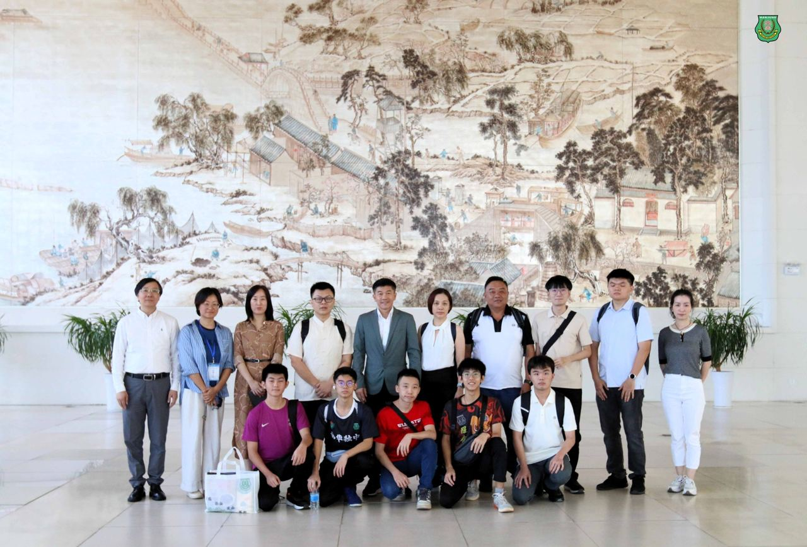
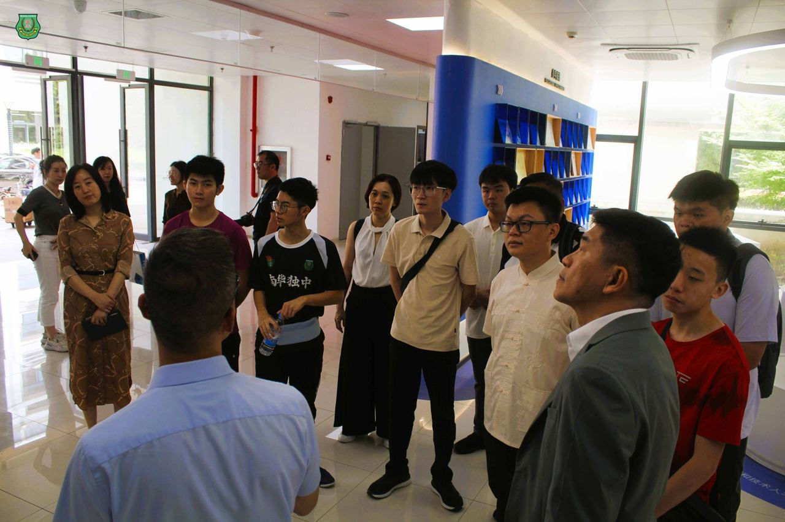
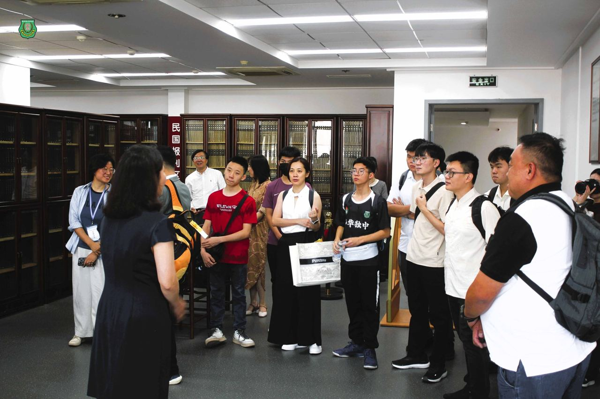
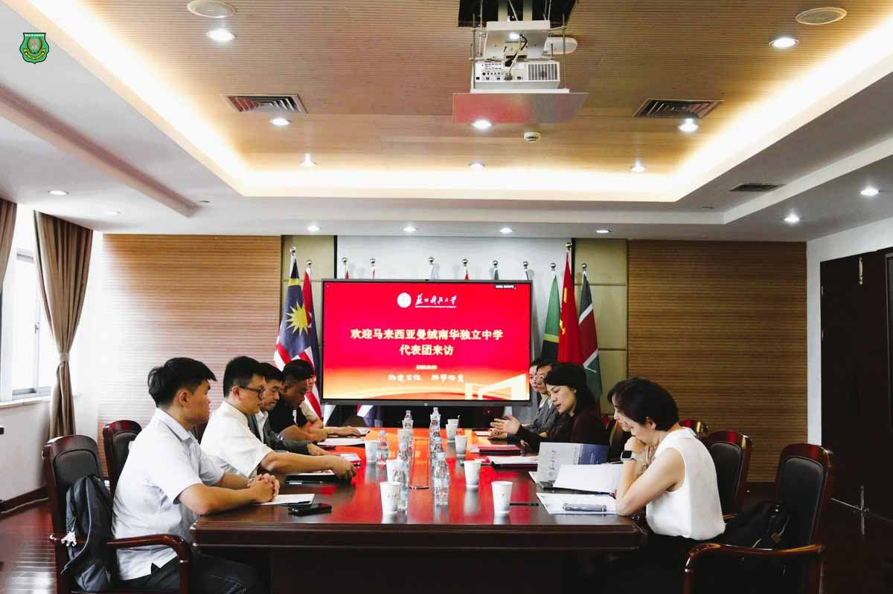
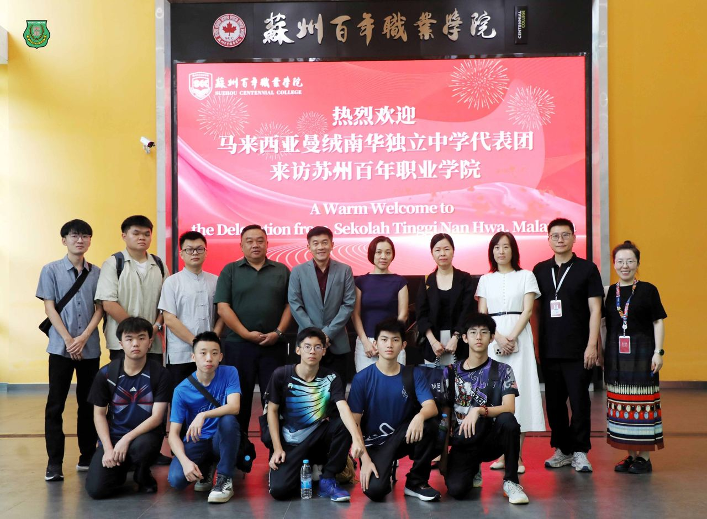
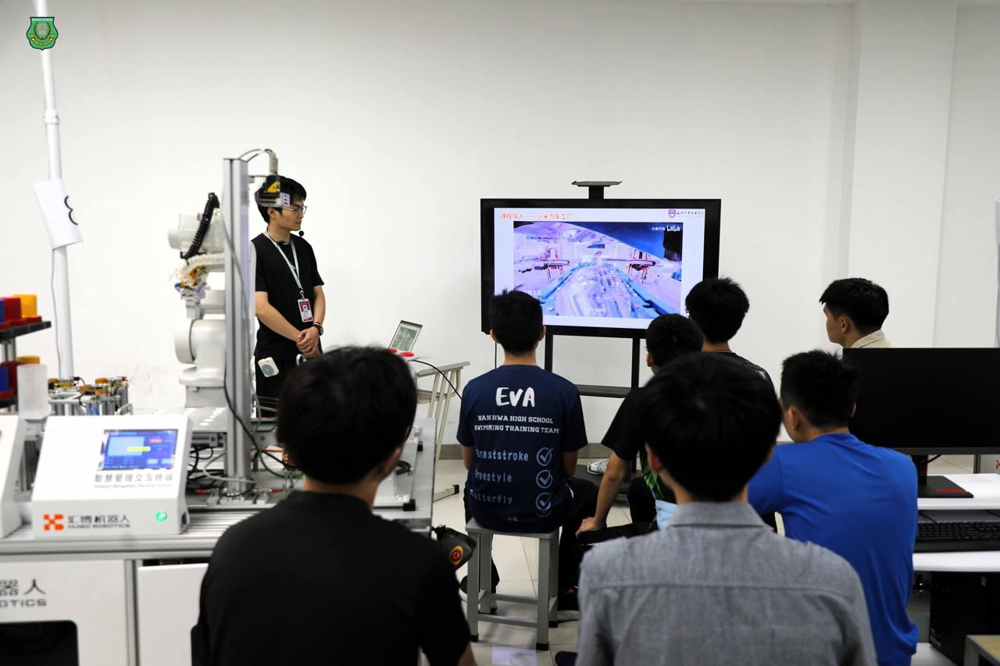
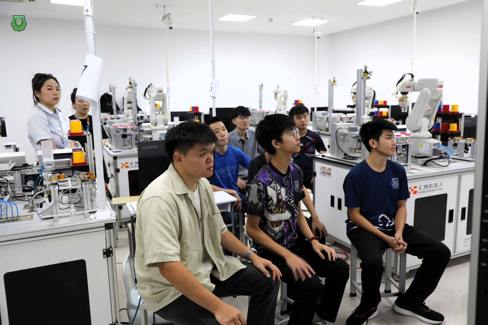
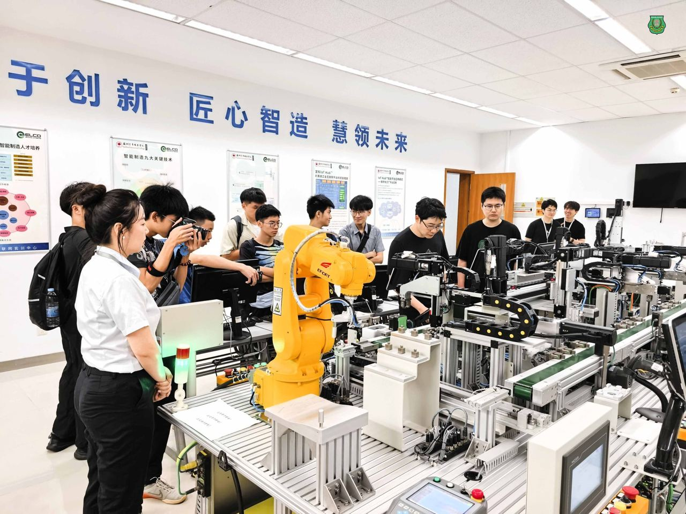

科技与文化之旅
科技与文化之旅
南华独中苏州研学团
走访高校深化建教合作
南华独中于2025年6月5日至9日，组织董事、校友会代表、教师与学生远赴中国苏州，展开一趟以“研学”为核心的交流访问。此行重点聚焦三所高等学府：#苏州科技大学、#苏州百年职业学院 以及 #西交利物浦大学，旨在探索未来建教合作的可能性，并让学生深入体验先进高教与职业技术教育。在研学行程之外，团员亦简要参访苏州园林、历史街区与智能企业，进一步认识在地人文与城市发展脉络。
#探访苏州科技大学：环境工程、图书馆与国际住宿
研学团首先来到苏州科技大学，学生一行参观了该校先进的校园硬体设施及国际生住宿环境，并走入环境科学与工程学院，实地了解其教学与科研空间。同时，董事、校友及教师代表则与该校进行座谈交流，围绕教学理念、产学合作、师资互访等议题深入探讨，双方初步达成推动建教合作的共识。
#沉浸式技职体验：苏州百年职业学院
在苏州百年职业学院的交流中，学生参与了内容扎实的沉浸式课程体验，重点项目涵盖：ABB工业机械手臂实操、模拟流水线作业流程、智能制造基础原理与传感系统互动教学过程中采用互动式、实作导向的方式，激发学生对工业自动化与智能制造的兴趣。该体验也为南华独中未来开设工业4.0相关课程奠定基础，推动职业技能教育迈向新阶段。此外，学生亦有机会动手实作，亲自体验剪纸动画的制作过程。
#走进西交利物浦大学：拓展国际视野
研学团亦走访了融合中西教育理念的西交利物浦大学，除校园参观外，更与校方代表展开了深入交流，进一步了解其国际化办学模式与育才方针。南华独中董事与教师亦借此契机，与该校洽谈建教合作契机，探索学生升学与项目合作的可能路径。







